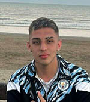
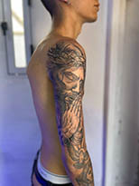

GIANLUCA PETROSINO
Diseñador en Comunicación Visual
Estudiante en UNLa especializado en diseño y comunicación visual
Soy estudiante de Diseño en la Universidad Nacional de Lanus con interés en la comunicación visual. Me enfoco en desarrollar soluciones visuales claras, combinando pensamiento conceptual y herramientas digitales con el fin de comunicar.

FORMACION:
Carrera: Diseño y Comunicación Visual
Institución: Universidad Nacional de Lanús
Año de Inicio: 2023
SECUNDARIO:
Institución: Colegio Cristo Rey Lanús
Año de egreso: 2022
EXTRAS Y TRABAJOS:
Cursos: Curso Profesional Tatuador / Curso Profesional Barbería
Idioma: Inglés básico
EXPERIENCIAS/PORTAFOLIO
Me desempeño en la barbería desde los 14 años y tatuajes desde los 17 años, realizando trabajos personalizados enfocados en llevar mi estilo al realismo, buscando la satisfacción del cliente.
